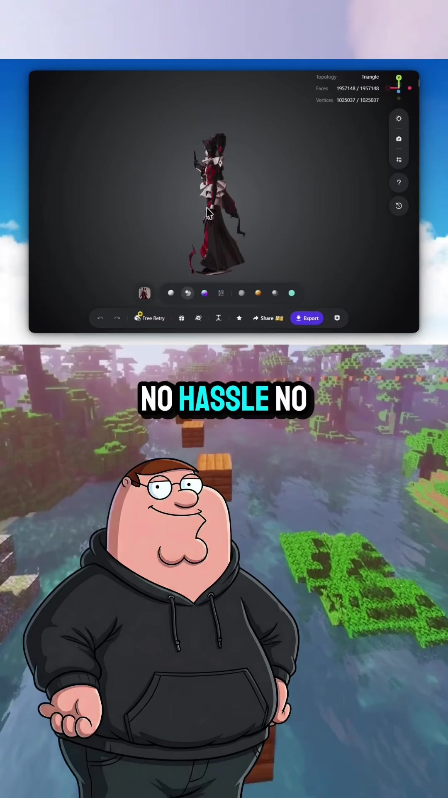
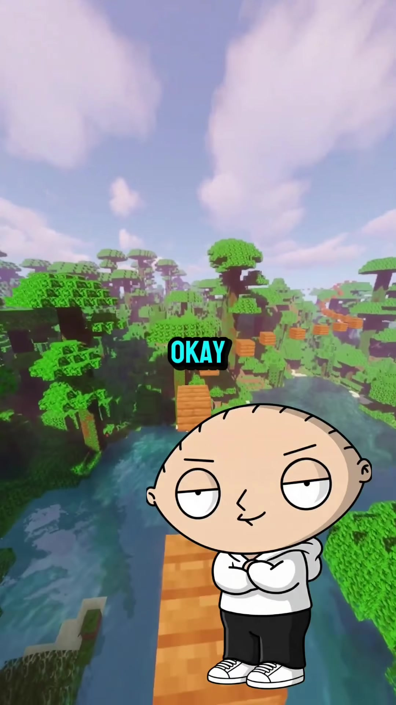
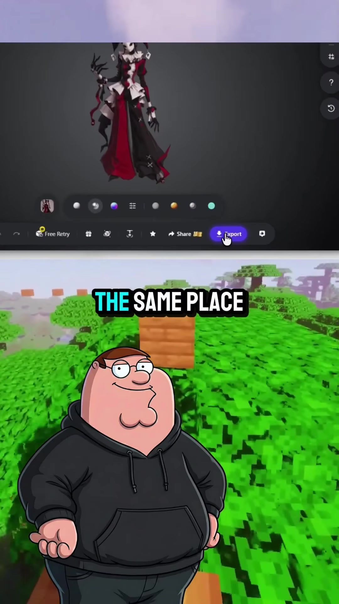

AI · 3D-Generation
Tripo AI: Single-Image to 3D Mesh Generation, Ultra 8K Topology & Smart Mesh Game-Engine Export
A fast generative 3D asset pipeline using Tripo AI (tripo3d.ai) to bypass manual multi-hour poly-modelling in Blender. Demonstrates turning a single 2D concept image or photograph into fully textured 3D mesh assets using two distinct operational modes: Ultra Mode (delivering production-grade assets with up to 8K PBR textures and structured manifold topology) and Smart Mesh (sub-2-second generation of low-poly, clean-quad/tri game-ready meshes). Outlines the built-in multi-part mesh editor for splitting, merging, 3D printing preparation, and direct native export to game engines like Unity and Unreal Engine.

Workflow & Feature Comparison
-
Single-Image Ingestion & Multi-View Estimation:
In the Tripo AI workspace (
tripo3d.ai), upload a single 2D image (character, prop, or environment architecture). The platform automatically generates multi-view orthogonal angles (Generate Multi-Views) to reconstruct occluded depth and reverse-angle geometry without requiring multi-camera photogrammetry rigs. -
Mode Selection — Ultra Mode vs. Smart Mesh:
Choose the pipeline mode based on production fidelity and time budget:
- Ultra Mode: High-definition generation designed for hero assets. Produces detailed surface geometry, high polygon counts (~1.9M faces, ~1.0M vertices), and 8K surface texture baking with clean, predictable topology.
- Smart Mesh: High-speed generation engine completing low-poly, game-ready assets in under 2 seconds. Produces optimized polygon budgets suited for mobile games, background scene props, and real-time interactive scenes.
-
In-Browser Mesh Editing & Part Splitting:
Utilize Tripo's built-in 3D mesh suite directly in the browser without switching across five external digital content creation (DCC) apps:
- Part Splitting & Segmentation: Isolate limbs, clothing, weapons, or separate sub-meshes (e.g., separating 283k sub-mesh faces from a 1.95M mesh) for modular animation rigging.
- Merge & Boolean Tools: Fuse disparate components into contiguous manifold geometry ready for 3D printing.
- Direct Game Engine Export: Export formats directly pre-configured for game development pipelines (Unity, Unreal Engine, GLB, OBJ, STL, FBX) eliminating manual re-topology or UV-remapping stages.
Workflow Interface & Mesh Details


Verbatim Breakdown
| Time / Speaker | Spoken Dialogue (English) | On-Screen Display / Text |
|---|---|---|
| 00:00 - 00:05 | Stewie: "Peter, how's everyone making these crazy 3D models in minutes while I'm still wasting 3 hours in Blender?" | IN BLENDER |
| 00:05 - 00:09 | Peter: "Because you don't know about this AI tool, it's called Tripo, and this is absolutely insane." | THIS AI TOOL • IT'S CALLED TRIPO |
| 00:09 - 00:10 | Stewie: "Wait, show me!" | SHOW ME |
| 00:10 - 00:17 | Peter: "Watch, I just upload a raw image into Tripo, and it makes a full 3D version in minutes. No hassle, no more wasting hours in Blender and other tools." | Tripo AI 3D Workspace Generate Model: [3D Model] [Smart Mesh] Generate Multi-Views A FULL 3D VERSION IN MINUTES |
| 00:17 - 00:19 | Stewie: "Wait, that's actually from just one photo?" | FROM JUST ONE PHOTO? |
| 00:19 - 00:24 | Peter: "One photo, Ultra mode, 8K texture, clean topology, ready to actually use." | Topology: Triangle • Faces: 1922553 • Vertices: 1022860 ULTRA MODE • 8K TEXTURE • CLEAN TOPOLOGY • READY TO ACTUALLY USE |
| 00:25 - 00:27 | Stewie: "Okay, and if I need something fast instead?" | SOMETHING FAST INSTEAD? |
| 00:27 - 00:30 | Peter: "Smart Mesh generates a clean, game-ready low-poly version in under 2 seconds." | SMART MESH • GAME-READY LOW-POLY VERSION • IN UNDER 2 SECONDS |
| 00:30 - 00:33 | Stewie: "2 seconds? For something usable?" | 2 SECONDS? • FOR SOMETHING USABLE? |
| 00:33 - 00:40 | Peter: "Straight into Unity or Unreal. No cleanup needed. And I can edit, split, and export it all in the same place. No jumping between 5 different apps." | Topology: Triangle • Faces: 283824 / 1957148 • Vertices: 147836 / 1029533 Controls: [Merge] [Save] [3D Print] [Share] [Export] STRAIGHT INTO UNITY OR UNREAL • EDIT, SPLIT, EXPORT IN THE SAME PLACE |
| 00:41 - 00:43 | Stewie: "Okay, that's actually insane. How do I try this?" | HOW DO I TRY THIS? |
| 00:43 - 00:49 | Peter: "Go to tripo3d.ai. New users get 500 free credits with my code within 24 hours. And if you check my bio, you'll get 60% off your first month too. Links right there." | tripo3d.ai • 500 free credits: code [VKEAU3] *(caption)* • 60% off first month: code [TRIPOCREW] *(caption)* |
Referenced Tools & Resources
- Tripo AI: Generative AI 3D modelling and mesh reconstruction platform (tripo3d.ai /
@tripo.ai). - Blender: Traditional open-source 3D DCC software referenced as manual time bottleneck.
- Unity & Unreal Engine: Real-time game engines explicitly targeted for direct low-poly Smart Mesh and Ultra Mode asset import.
- Promo & Credit Codes: Code
VKEAU3(500 free credits for new accounts within 24h); codeTRIPOCREW(60% discount on first month subscription) *(caption)*.
Try This
- Prepare a clean 2D concept illustration or prop photo with high figure-ground contrast.
- Navigate to
tripo3d.aiand log into the 3D Workspace. - Upload the 2D image and enable
Generate Multi-Views. - Toggle between Smart Mesh (if targeting sub-2-second low-poly game development assets) or Ultra Mode (if baking 8K high-density textured models for cinematic rendering).
- Open the model in the browser editor to split separate elements (e.g. accessories or garments) using sub-mesh selection, or verify vertex manifold integrity before clicking Export (FBX/GLB/OBJ) for Unity or Unreal Engine.